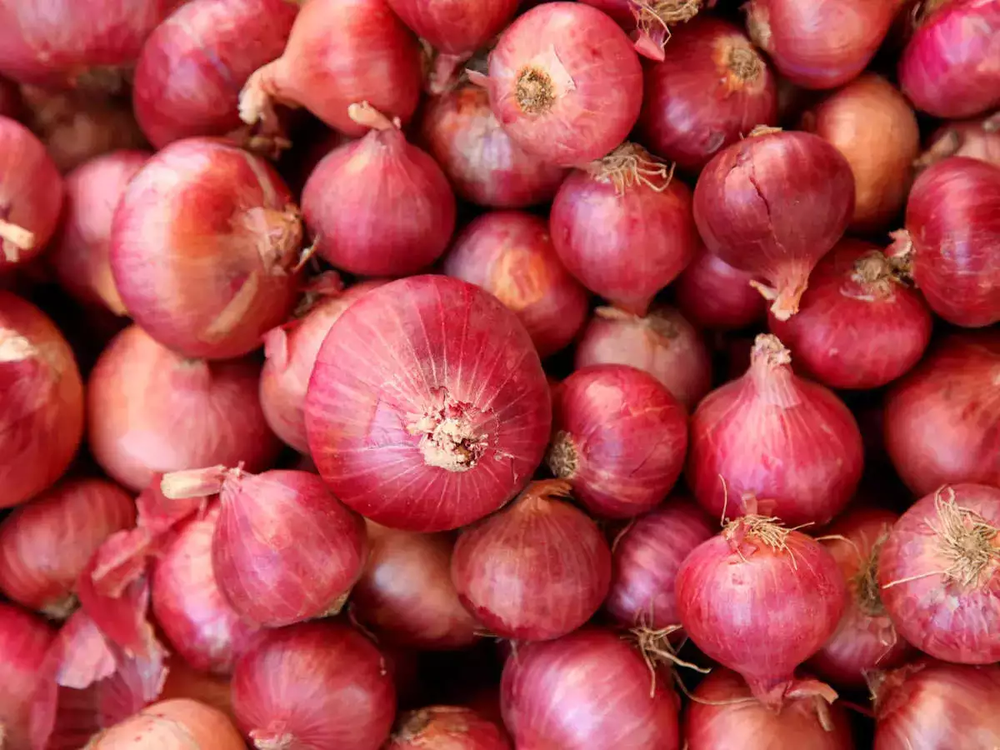

About Onion
The onion (Allium cepa L., from Latin cepa meaning "onion"), also known as the bulb onion or
common onion, is a vegetable that is the most widely cultivated species of the genus Allium. The
shallot is a botanical variety of the onion which was classified as a separate species until
2010. Its close relatives include garlic, scallion, leek, and chive.
This genus also contains several other species variously referred to as onions and cultivated
for food, such as the Japanese bunching onion (Allium fistulosum), the tree onion (A. ×
proliferum), and the Canada onion (Allium canadense). The name wild onion is applied to a number
of Allium species, but A. cepa is exclusively known from cultivation. Its ancestral wild
original form is not known, although escapes from cultivation have become established in some
regions.[5] The onion is most frequently a biennial or a perennial plant, but is usually treated
as an annual and harvested in its first growing season.
The onion plant has a fan of hollow, bluish-green leaves and its bulb at the base of the plant
begins to swell when a certain day-length is reached. The bulbs are composed of shortened,
compressed, underground stems surrounded by fleshy modified scale (leaves) that envelop a
central bud at the tip of the stem. In the autumn (or in spring, in the case of overwintering
onions), the foliage dies down and the outer layers of the bulb become more dry and brittle. The
crop is harvested and dried and the onions are ready for use or storage. The crop is prone to
attack by a number of pests and diseases, particularly the onion fly, the onion eelworm, and
various fungi which can cause rotting. Some varieties of A. cepa, such as shallots and potato
onions, produce multiple bulbs.
Condition to grow Onion:-
-
Type of soil require
Onion can be grown in all types of soils such as sandy loam, clay loam, silt loam and heavy
soils. However, the best soil for successful onion cultivation is deep, friable loam and
alluvial soils with good drainage, moisture holding capacity and sufficient organic matter.
In heavy soils, the bulbs produced may be deformed. Onion crop can be grown successfully on
heavy soil with application of organic manure prior to planting and preparation of the field
for onion cultivation should be very good. The optimum pH range, regardless of soil type, is
6.0 - 7.5, but onion can also be grown in mild alkaline soils. Onion crop is more sensitive
to highly acidic, alkali and saline soils and water logging condition. Onions do not thrive
in soils having pH below 6.0 because of trace element deficiencies, or occasionally, Al or
Mn toxicity. The threshold electrical conductivity of a saturation extract (ECe) for onion
crop is 4.0 dS/m. When the ECe level exceeds this, crop yield starts declining.
-
Climate
Onion is a temperate crop but can be grown under a wide range of climatic conditions such as
temperate, tropical and subtropical climate. The best performance can be obtained in a mild
weather without the extremes of cold and heat and excessive rainfall. However, onion plant
is hardy and in the young stage can withstand freezing temperature also. In India, short-day
onion is grown in the plains and requires 10-12 hours day length. The long-day onion is
grown in hills requiring 13-14 hours day length. For vegetative growth, lower temperature
combined with short photoperiod is required whereas relatively higher temperature along with
longer photoperiod is required for bulb development and maturity. The optimum temperature
for vegetative phase and bulb development is 13-24˚C and 16-25˚C, respectively. It requires
about 70% relative humidity for good growth. It can grow well in places where the average
annual rainfall is 650-750 mm with good distribution during the monsoon period. Areas with
low (< 650 mm) or heavy rainfall (>750 mm) are not particularly suitable for rain-fed crop
-
Irrigation
Irrigation requirement of onion depends upon the season, soil type, method of irrigation and
age of the crop. In general, onion needs irrigation at the time of transplanting, three days
after transplanting and subsequently at 7-10 days interval depending upon the soil moisture.
In general, Kharif crop needs 5-8 irrigations, the late Kharif crop requires 10-12 and Rabi
crop needs 12-15 irrigations. Onion being a shallow rooted crop, needs frequent light
irrigation to maintain optimum soil moisture for proper growth and bulb development.
Irrigation needs to be stopped when the crop attains maturity (10-15 days before harvest)
and the top starts falling which helps in reducing the rotting during storage. Excess
irrigation is always harmful and dry spell followed by irrigation will result in the
splitting of the outer scales and also formation of bolters. Water loss with flood
irrigation is too high due to conveyance, seepage and percolation losses.
Modern irrigation techniques such as drip and micro sprinkler irrigation help in saving
irrigation water and improve the marketable bulb yield significantly. In case of drip
irrigation, seedlings need to be planted at a spacing of 10 x 15 cm in a broad bed furrow
(BBF) of 15 cm height and 120 cm top width with 45 cm furrow. Each BBF should have two drip
laterals at (16 mm size) 60 cm distance with inbuilt emitters. The distance between two
inbuilt emitters should be around 30-50 cm and the discharge flow rate is 4 l/hr. In case of
micro sprinkler, the distance between two laterals (20 mm) of micro sprinkler should be 6m
with a discharge rate of 135 l/hr. The research outcome indicated that the drip irrigation
at 100 % Pan Evaporation (PE) significantly improved the marketable bulb yield (15-25%) with
higher per cent A grade bulbs, water saving of about 35-40% and labour saving of 25-30% as
compared to flood irrigation.
-
Manuring & Fertilization
In addition to NPK, sulphur is also an essential plant nutrient important for onion crop for
improving yield and the pungency of onion bulbs.
Sulphur is recommended as basal dose at the time of transplanting. Application of 15 kg
sulphur/ha is sufficient for growing onion crops in soils having sulphur level above 25
kg/ha while 30 kg sulphur/ha is needed for soils having sulphur level below 25 kg/ha for
optimum production of onion. Soil application of 50 kg S /ha is recommended for long day
onion crops.
Fetigation is an effective and efficient method of applying fertilizers through drip
irrigation which is used as the carrier and distributor of irrigation water and crop
nutrients. Application of fertilizers @ NPK 40:40:60 kg /ha as basal and the remaining 70 kg
N in seven splits through drip irrigation is recommended for achieving higher marketable
bulb yield and cost benefit ratio. The drip irrigation system not only helps in water saving
but also reduces nitrogen losses by leaching into ground water, as in fertigation,
fertilizer nutrients are applied in root zone only.